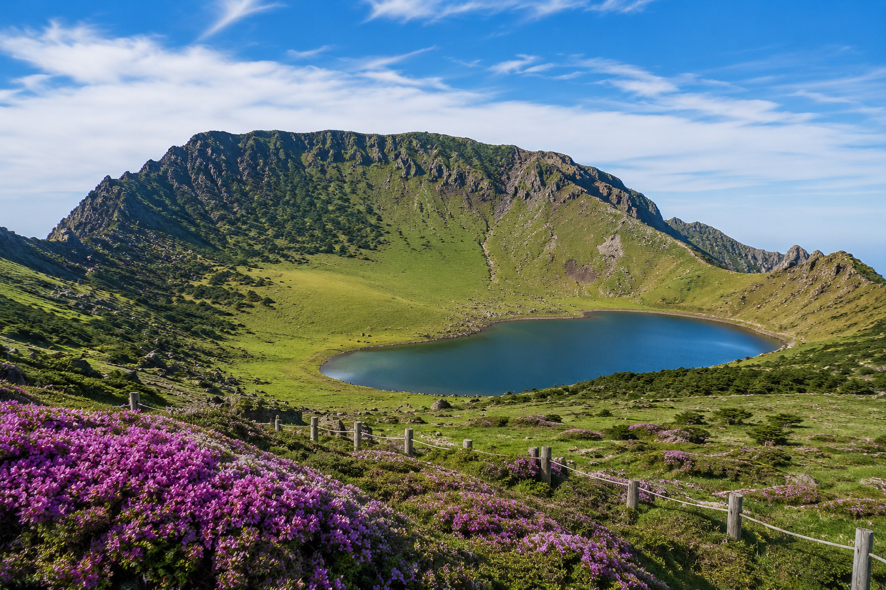

우리나라의 대표적인 산 중 하나인 한라산에 대한 정보를 표로 정리한 페이지
|
 |
|
| 한라산은 제주특별자치도 중앙에 있는 산이다. 1,947m로 남한에서 가장 높다. 한라산은 영주산으로도 불리며, 현무암질 용암이 겹겹이 쌓여 형성된 순상화산이다. 동서로 완만한 산릉을 이루며 정상에는 화구호인 백록담이 자리한다. 해발고도에 따라 상록활엽수림, 낙엽활엽수림, 침엽수림의 식생대가 나타나며, 산정 분화구를 중심으로 한 아고산대는 2007년 유네스코 세계자연유산에 등재되었다. 해발 600m 이상 153.33㎢ 구역은 국립공원으로 지정되어 있고, 산록별로 5개 등산로가 조성되어 백록담 동릉까지 오를 수 있다. | |
| 산 이름 | 한라산 |
|---|---|
| 위치 | 제주특별자치도 |
| 높이 | 1,947m |
| 대표 볼거리 | 백록담, 어리목 탐방로, 성판악 탐방로 |
| 추천 계절 | 봄, 가을, 겨울 |
| 특정 | 제주도의 대표하는 산 |